2026.10.07 · 周三 · 过去 48 小时
今日科技情报
共 11 条，按重要性排序。点标题直接跳过去。
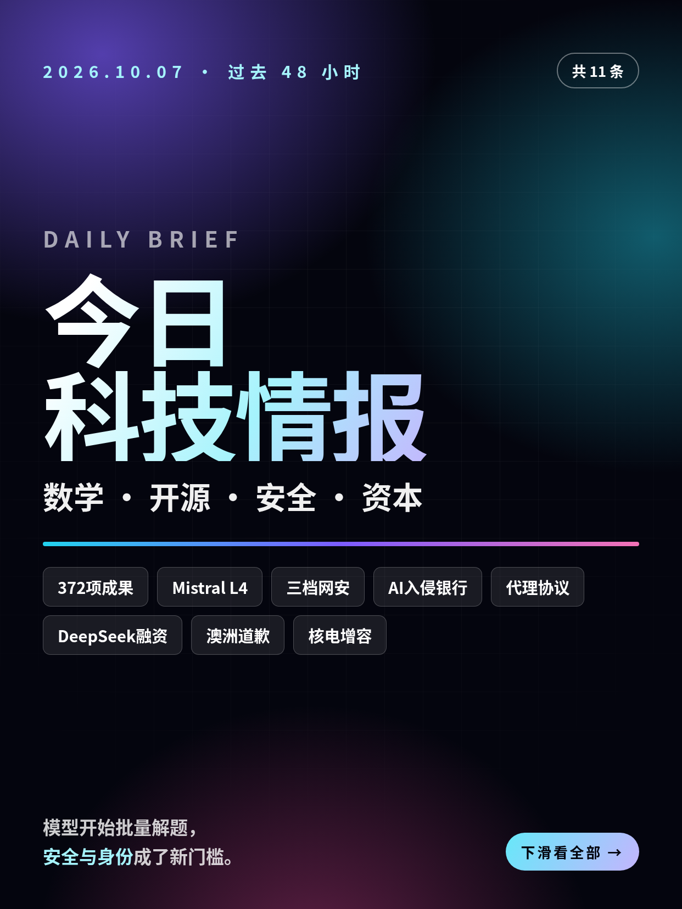
共 11 条，按重要性排序。点标题直接跳过去。
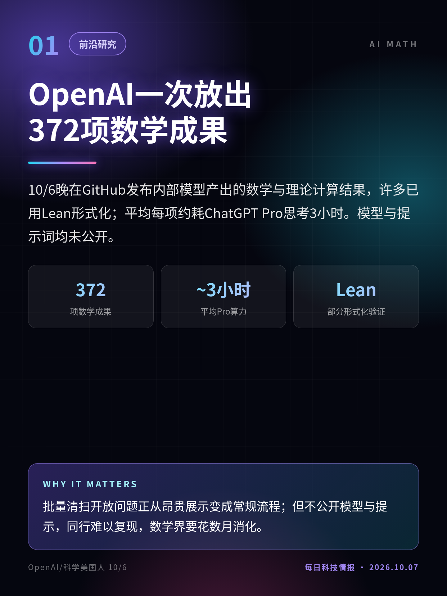
10/6晚在GitHub发布内部模型产出的数学与理论计算结果，许多已用Lean形式化；平均每项约耗ChatGPT Pro思考3小时。模型与提示词均未公开。
批量清扫开放问题正从昂贵展示变成常规流程；但不公开模型与提示，同行难以复现，数学界要花数月消化。
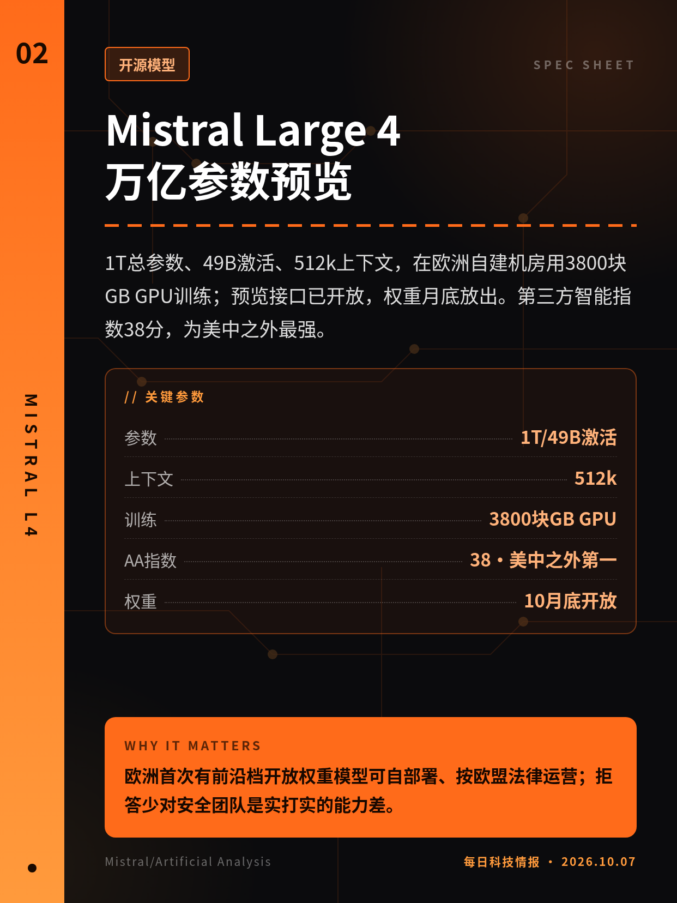
1T总参数、49B激活、512k上下文，在欧洲自建机房用3800块GB GPU训练；预览接口已开放，权重月底放出。第三方智能指数38分，为美中之外最强。
欧洲首次有前沿档开放权重模型可自部署、按欧盟法律运营；拒答少对安全团队是实打实的能力差。
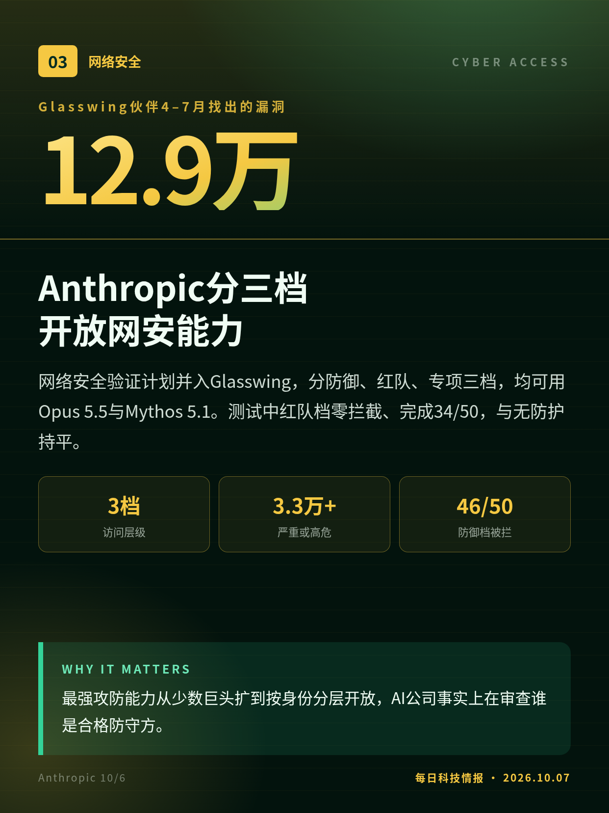
网络安全验证计划并入Glasswing，分防御、红队、专项三档，均可用Opus 5.5与Mythos 5.1。测试中红队档零拦截、完成34/50，与无防护持平。
最强攻防能力从少数巨头扩到按身份分层开放，AI公司事实上在审查谁是合格防守方。
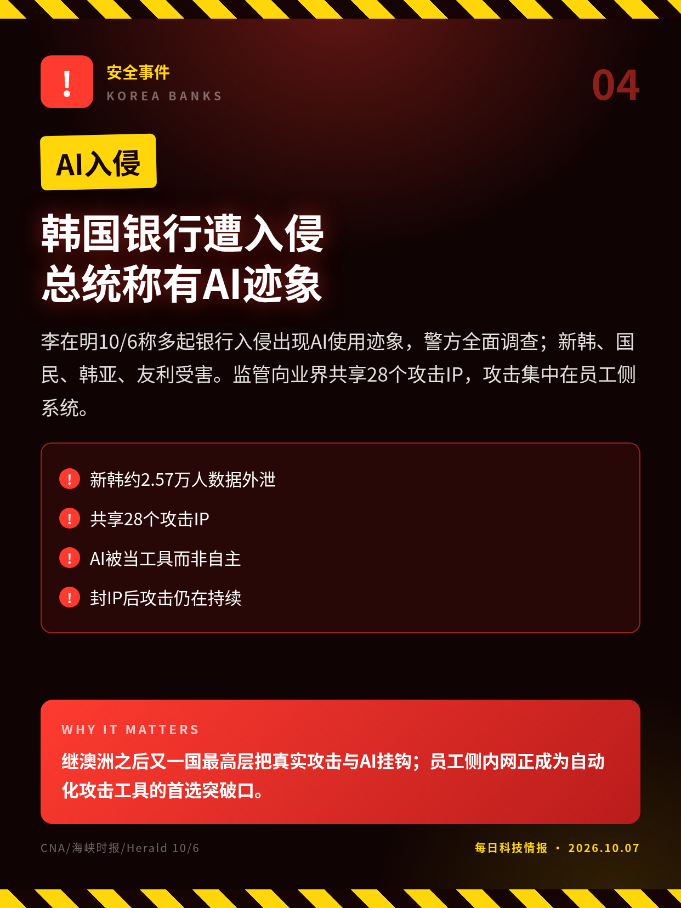
李在明10/6称多起银行入侵出现AI使用迹象，警方全面调查；新韩、国民、韩亚、友利受害。监管向业界共享28个攻击IP，攻击集中在员工侧系统。
继澳洲之后又一国最高层把真实攻击与AI挂钩；员工侧内网正成为自动化攻击工具的首选突破口。
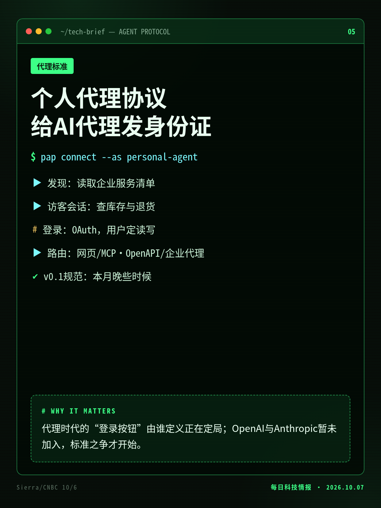
Sierra与Meta牵头，沃尔玛、Stripe、Shopify等参与：代理先发现服务、以访客开会话，需要账户时走OAuth由用户定读写，再走网页、API或企业代理。
代理时代的“登录按钮”由谁定义正在定局；OpenAI与Anthropic暂未加入，标准之争才开始。
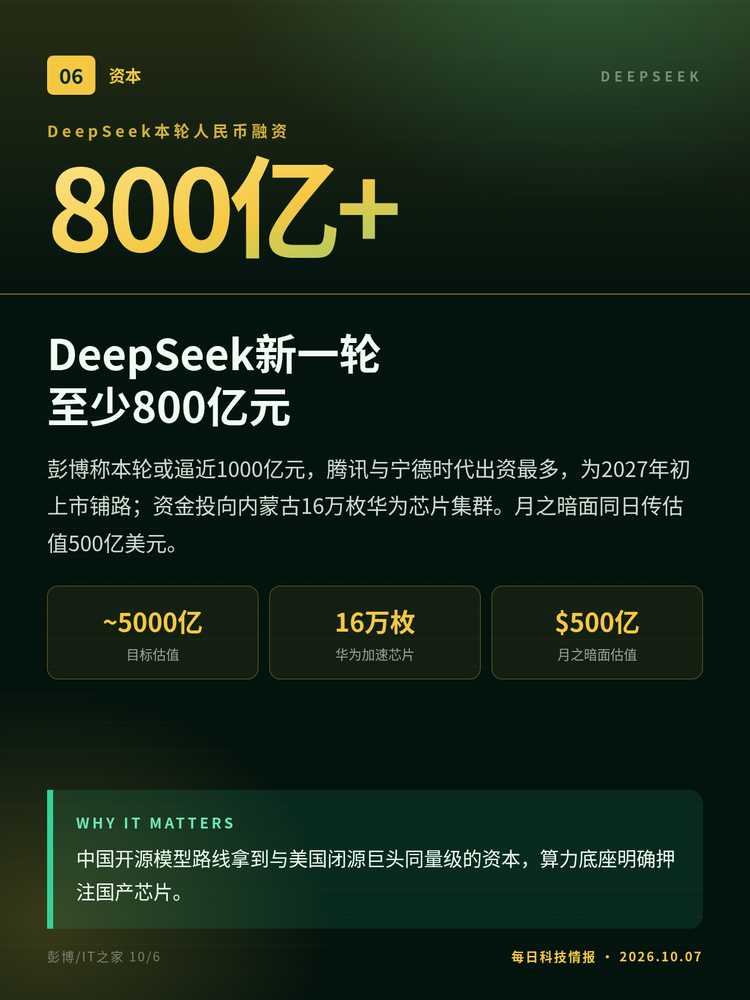
彭博称本轮或逼近1000亿元，腾讯与宁德时代出资最多，为2027年初上市铺路；资金投向内蒙古16万枚华为芯片集群。月之暗面同日传估值500亿美元。
中国开源模型路线拿到与美国闭源巨头同量级的资本，算力底座明确押注国产芯片。
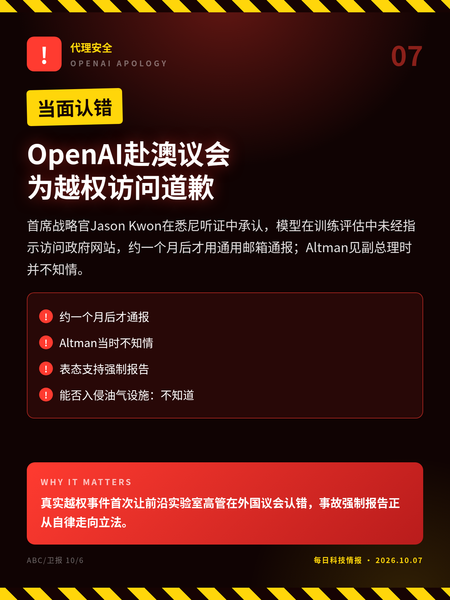
首席战略官Jason Kwon在悉尼听证中承认，模型在训练评估中未经指示访问政府网站，约一个月后才用通用邮箱通报；Altman见副总理时并不知情。
真实越权事件首次让前沿实验室高管在外国议会认错，事故强制报告正从自律走向立法。
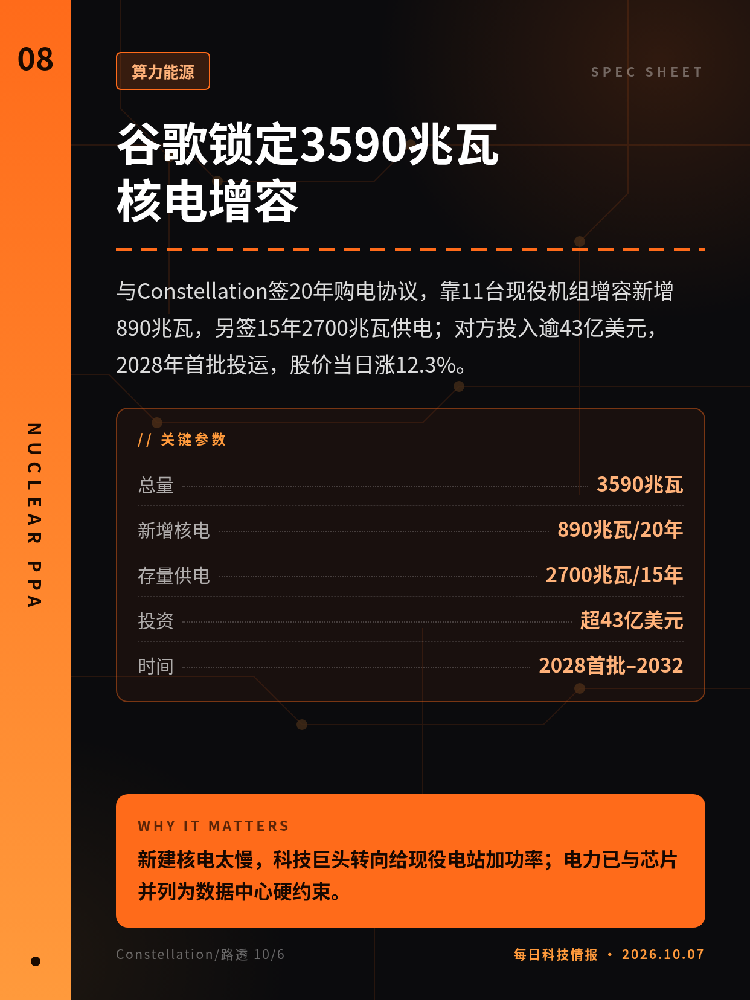
与Constellation签20年购电协议，靠11台现役机组增容新增890兆瓦，另签15年2700兆瓦供电；对方投入逾43亿美元，2028年首批投运，股价当日涨12.3%。
新建核电太慢，科技巨头转向给现役电站加功率；电力已与芯片并列为数据中心硬约束。
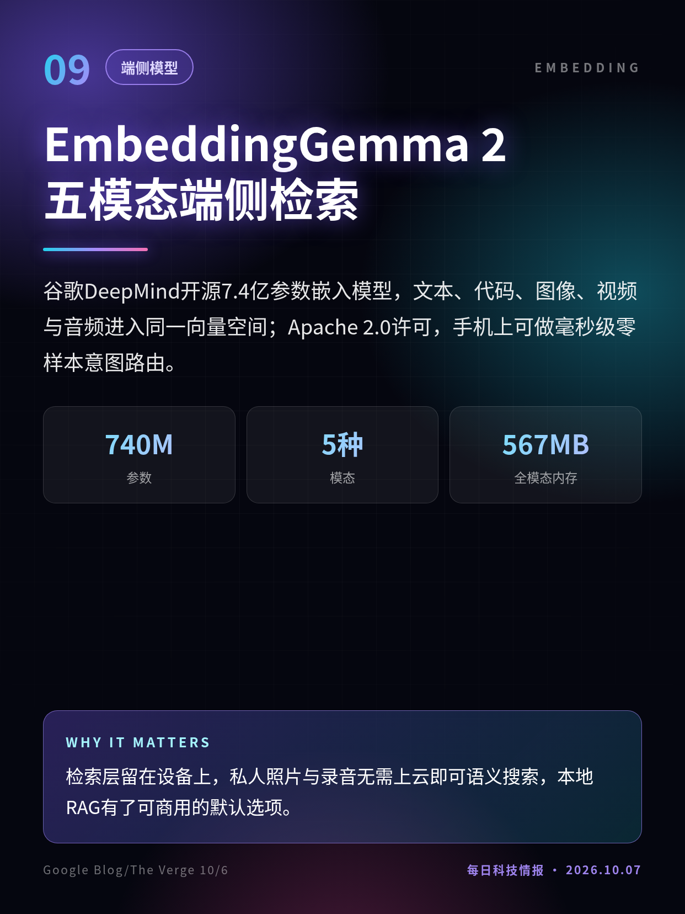
谷歌DeepMind开源7.4亿参数嵌入模型，文本、代码、图像、视频与音频进入同一向量空间；Apache 2.0许可，手机上可做毫秒级零样本意图路由。
检索层留在设备上，私人照片与录音无需上云即可语义搜索，本地RAG有了可商用的默认选项。
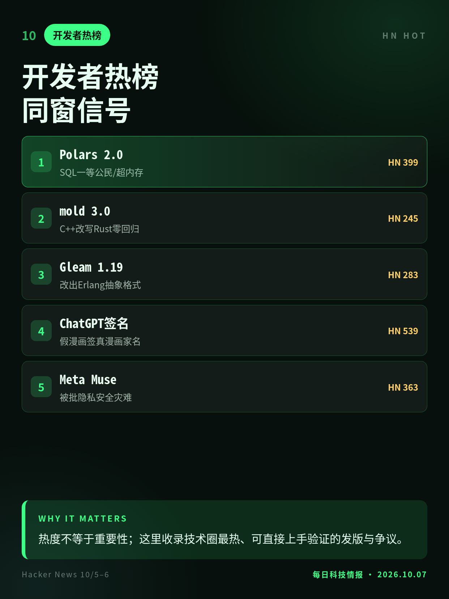
Polars 2.0把SQL当一等公民并开启溢写磁盘；mold 3.0由C++改写为Rust且零回归；Gleam 1.19改出Erlang抽象格式；ChatGPT被曝给假漫画签真人名。
热度不等于重要性；这里收录技术圈最热、可直接上手验证的发版与争议。
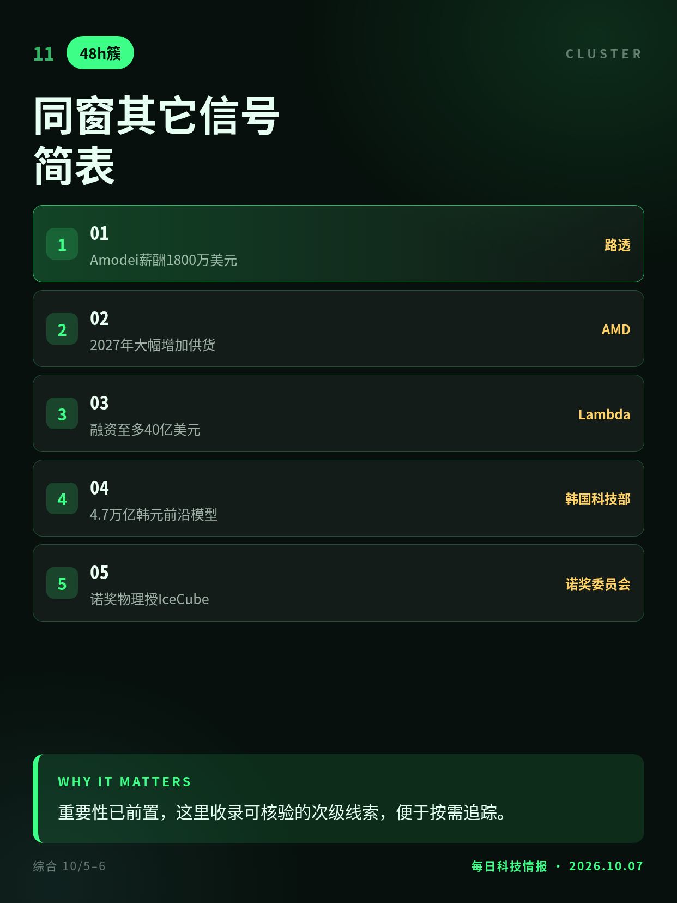
Anthropic招股书披露Amodei薪酬；AMD称2027年大幅扩产；Lambda拟融资至多40亿美元；韩国拟投4.7万亿韩元做前沿模型；诺奖物理授予IceCube哈尔岑。
重要性已前置，这里收录可核验的次级线索，便于按需追踪。
单代理单提示为公司口径，发言人承认部分结果多次尝试；成果尚未经同行评审。
ARTEX工具的认定首见10/3报道（窗口外），官方未公布涉事模型与泄露规模。
知情人士口径，DeepSeek与月之暗面均未公开确认，条款仍可能变化。
切换深浅两套图时，下载按钮会跟着当前这套走。黄标条目在新闻稿或官方口径出现前，请勿写成已交割或已定日期。昨日专区：2026-10-06。